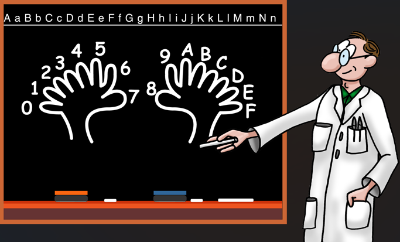

El sistema hexadecimal es un sistema numérico de base 16. Usa números del 0 al 9 y letras A-F.
Es común en programación, direcciones de memoria y colores web.
Para convertir un número hexadecimal a decimal se multiplica cada dígito por una potencia de 16, comenzando desde la derecha.
Ejemplo: Convertir 2A a decimal
2 × 16¹ = 32
A = 10 × 16⁰ = 10
Se suman los resultados:
32 + 10 = 42
Resultado: 42
Para convertir de hexadecimal a binario, cada dígito se reemplaza por su equivalente en 4 bits.
Ejemplo: Convertir 3F a binario
3 = 0011
F = 1111
Se unen:
00111111
Resultado: 111111
Primero se convierte a binario y después se agrupan los bits de 3 en 3 para obtener octal.
Ejemplo: Convertir 1C a octal
1 = 0001
C = 1100
Unido:
00011100
Se agrupa:
000 011 100
Conversión:
000 = 0
011 = 3
100 = 4
Resultado: 34

| Decimal | Hex |
|---|---|
| 10 | A |
| 11 | B |
| 15 | F |
| 26 | 1A |
Escribe un número hexadecimal:
Decimal: -
Binario: -
Octal: -